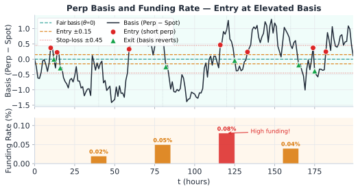
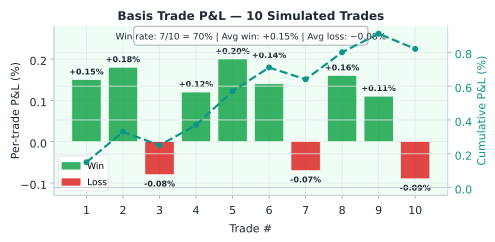

Statistical Arbitrage · บทที่ 13
Perpetual Basis Strategy:
Basis = perp − spot index — เบี่ยงเกิน fair value เมื่อไหร่ให้เทรด
แก่นของบทนี้ — อ่านก่อน
ราคา perpetual futures ควรอยู่ใกล้ spot index เพราะมีกลไก funding rate ดึงให้กลับ แต่ในช่วงที่ sentiment รุนแรง basis เบี่ยงเกิน fair value ชั่วคราว — นี่คือโอกาส trade ที่มีขอบเขตชัดเจน
$$\text{Basis}_t = P_{\text{perp},t} - P_{\text{spot},t} \qquad \text{Entry: } |\text{Basis}_t - \text{Basis}_{\text{fair}}| > k\,\sigma_{\text{basis}}$$
13.1 กลไก Funding Rate
Perpetual futures ไม่มี expiry — กลไกที่ทำให้ราคาใกล้ spot คือ funding rate ที่จ่ายระหว่าง long และ short ทุกรอบ:
กลไก Funding Rate ทำงานอย่างไร
ทุก 8 ชั่วโมง (Bybit) หรือทุก 1 ชั่วโมง (Lighter) คำนวณ funding rate จาก basis และ interest rate
ถ้า perp > spot (basis > 0): longs จ่าย shorts — ดึงให้ longs ปิด position → ราคา perp ลง
ถ้า perp < spot (basis < 0): shorts จ่าย longs — ดึงให้ shorts ปิด position → ราคา perp ขึ้น
Funding amount = position_size × funding_rate × (interval / 8h)
ตัวอย่าง: Bybit BTC Funding
Funding rate = +0.05% (longs จ่าย shorts) ทุก 8 ชั่วโมง = +0.15%/วัน = +4.5%/เดือน
สูตร funding rate มาตรฐาน (Bybit-style):
funding_rate = clamp(
premium_index + clamp(interest_rate - premium_index, -0.05%, +0.05%),
-0.75%, +0.75%
)
premium_index = (P_perp - P_spot_index) / P_spot_index ← basis เป็น %
interest_rate = 0.01% (Bybit กำหนด fixed = 0.01% ต่อรอบ 8h)
13.2 Basis = Perp − Spot: นิยามและ Fair Value
ในทางปฏิบัติ basis วัดเป็น absolute price หรือ percentage:
นิยาม Basis
$$\text{Basis}_t = P_{\text{perp},t} - P_{\text{spot},t}$$
P_perp = mark price ของ perpetual futuresP_spot_index = weighted average ของราคา spot จาก multiple exchangesBasis_fair = ค่าที่ basis "ควร" เป็น ตาม funding rate model
สำหรับ perpetual ที่ไม่มี expiry fair value basis ถูกขับเคลื่อนด้วย funding rate ไม่ใช่ cost of carry ของ money market — basis ที่ fair คือค่าที่สะท้อน funding payment ที่คาดไว้ prorate ตามเวลาที่เหลือจนถึง funding ครั้งหน้า:
Basis_fair = P_spot × rate_per_8h × (hours_left / 8)
rate_per_8h = funding rate ต่อรอบ 8 ชั่วโมง (Bybit default ≈ 0.01%)
hours_left = เวลาที่เหลือจนถึง funding ครั้งถัดไป (หน่วย: ชั่วโมง)
ตัวอย่าง: P_spot = $65,000, rate_per_8h = 0.01% = 0.0001, hours_left = 4
Basis_fair = 65,000 × 0.0001 × (4 / 8)
= 65,000 × 0.0001 × 0.5
≈ $3.25
Fair value basis มักใกล้ศูนย์มากสำหรับ BTC perp เพราะ rate_per_8h ต่ำและเหลือเวลาไม่กี่ชั่วโมง — basis เบี่ยงเกินจากการ sentiment หรือ imbalance ของ demand
13.3 Basis Timeline และ Funding Rate

Panel 1: Basis = P_perp − P_spot_index (USD)
เวลา (8h interval)
$
0
+k·σ
fair
ENTRY: Short perp
Long spot
T1
T2
T3
T4
Panel 2: Funding Rate ทุก 8h (%) — longs จ่าย shorts เมื่อ basis > 0
0
+0.05%
+0.10%
0.02%
0.04%
0.06%
0.04%
0.02%
0.01%
T1
T2
T3
T4
T5
บน: basis (Perp−Spot) พร้อม entry/exit threshold — red dots = entry เมื่อ basis เกิน threshold, green triangles = exit เมื่อ basis กลับสู่ fair value | ล่าง: funding rate bars ที่ settlement
13.4 Entry/Exit Rules
กฎการเข้าและออก basis trade แบ่งตาม direction ของ basis deviation:
เงื่อนไข Direction Action เหตุผล basis > fair + k×σ_basis Basis บวกสูงเกิน Short perp + Long spot Perp แพงเกินไป รอ basis กลับลง basis < fair − k×σ_basis Basis ลบต่ำเกิน Long perp + Short spot Perp ถูกเกินไป รอ basis กลับขึ้น basis → fair value กลับปกติ ปิดทั้งสองขา Mean reversion สำเร็จ take profit funding payment ≥ target yield ได้ yield แล้ว ปิดทั้งสองขา เก็บ funding เพียงพอแล้ว |basis| > 3×σ_basis (blow-up) เกิน stop-loss ปิด emergency Basis ไม่กลับ — regime เปลี่ยน
สองแหล่ง P&L ของ Basis Trade
Basis convergence: กำไรเมื่อ basis กลับมา fair value (capital gain จาก spread)Funding income: ถ้า short perp ในช่วง basis > 0 → รับ funding payment ทุก 8h ขณะ hold position
Trade ที่ดีจะมีทั้งสองแหล่ง — basis กลับ + funding เข้ากระเป๋าระหว่างรอ
ความเสี่ยงของ Basis Trade
Basis blow-up: ในช่วง mania (เช่น bull run รุนแรง) basis อาจขยายไปเรื่อยๆ ก่อนกลับSpot execution risk: การ short spot อาจมีปัญหา borrow cost หรือ availabilityFunding flip: funding rate อาจกลับทิศ ทำให้ long perp ต้องจ่ายแทนIndex divergence: spot_index อาจ diverge จาก exchange ที่ใช้ hedge จริงLiquidation cascade: ถ้า perp long ถูก margin call ในขณะที่ short spot ยังค้างอยู่ — position จะกลายเป็น naked short spot ทันที ซึ่งสามารถขาดทุนไม่จำกัด นี่คือ scenario ที่อันตรายที่สุดของ basis trade และเกิดขึ้นได้เร็วมากในช่วงตลาด crash เช่น เมื่อ BTC ร่วง 15–20% ใน 1 ชั่วโมง — ต้องกำหนด maintenance margin buffer ไว้สูงกว่าปกติ (แนะนำ ≥3× required) และมี stop-loss ทั้งสองขาพร้อมกัน
13.5 Cost Breakdown Table
ก่อน trade ต้องรู้ต้นทุนทุกประเภท เพื่อคำนวณ net edge:
ประเภทต้นทุน ค่าปกติ (Bybit BTC) ผลต่อ P&L หมายเหตุ Taker fee (entry) 0.055% per leg −0.11% รวมสองขา ใช้ limit order ลดเหลือ −0.01% (maker) Taker fee (exit) 0.055% per leg −0.11% รวมสองขา รวม round-trip: −0.22% Bid-ask spread ~$1–5 (BTC perp) ≈ −0.002–0.008% ขึ้นกับ liquidity ณ เวลานั้น Slippage 0.01–0.05% −0.01 ถึง −0.05% ขึ้นกับขนาด order vs market depth Funding cost (long) ±0.01–0.10% ทุก 8h + หรือ − ขึ้นกับทิศ กำไรถ้า short perp ในช่วง basis+ Spot borrow (short spot) 0.01–0.05%/วัน −ต่อวันที่ถือ ค่าเช่า BTC สำหรับ short บน spot margin — Bybit เรียก ~0.01%/วัน; ถ้า hedge ผ่าน inverse perp ไม่มีต้นทุนนี้ รวม round-trip ≈ −0.25 ถึง −0.40% ต่อ trade (ไม่รวม funding income)
Breakeven Analysis: Basis ต้องกว้างแค่ไหนถึงคุ้ม?
ถ้า total cost ≈ 0.35% per round-trip → basis ต้อง deviate จาก fair value อย่างน้อย 0.35% จึงจะ breakeven
13.6 Pseudo-code: perp_basis_signal()
def perp_basis_signal(perp_price, spot_index, rate_per_8h,
time_to_funding_h, # หน่วย: ชั่วโมง
hist_sigma, k=2.0):
# คำนวณ basis จริง
basis = perp_price - spot_index
# คำนวณ fair value basis จาก funding rate (prorate ตามเวลาที่เหลือ)
# rate_per_8h × (เวลาที่เหลือ/8) — unit สอดคล้องกันทั้งหมด
fair_basis = spot_index * rate_per_8h * (time_to_funding_h / 8.0)
# คำนวณ z-score ของ basis deviation
zscore = (basis - fair_basis) / hist_sigma
# Signal logic
if zscore > k:
return "SHORT_PERP_LONG_SPOT", zscore # basis สูงเกิน
elif zscore < -k:
return "LONG_PERP_SHORT_SPOT", zscore # basis ต่ำเกิน
return "NO_SIGNAL", zscore
การคำนวณ hist_sigma ของ Basis
hist_sigma ควรคำนวณจาก rolling std ของ (basis − fair_basis) ในช่วง 7–30 วัน
การเพิ่ม Funding Yield Forecast ใน Signal
def basis_trade_expected_pnl(basis_entry, fair_basis, hist_sigma,
funding_rate, hold_hours, position_size,
spot_price):
# P&L จาก basis convergence (mean reversion)
basis_move = basis_entry - fair_basis # คาดว่า basis จะกลับมา fair
basis_pnl = basis_move * position_size / spot_price
# P&L จาก funding (short perp receives funding)
n_payments = hold_hours / 8 # จำนวนรอบ funding (ทุก 8h)
funding_pnl = funding_rate * position_size * n_payments
# ต้นทุน round-trip (fee + slippage)
total_cost = position_size * 0.0035 # ≈ 0.35%
return basis_pnl + funding_pnl - total_cost
13.7 Running Example: Bybit BTC Perp Basis Trade
Running Example: Bybit BTC Perp Basis Trade — ตัวเลขทีละขั้น
สถานการณ์: วันที่ BTC ราคา pump แรง longs เปิดมาก basis บวกสูงผิดปกติ
ข้อมูล Input ค่า ที่มา P_perp (Bybit mark price) $67,450 Bybit API P_spot_index $67,100 Bybit spot index (avg หลาย exchanges) Basis_actual $350 (+0.521%) 67,450 − 67,100 rate_per_8h (Bybit funding) 0.01% = 0.0001 Bybit default funding rate per 8h interval time_to_funding_h 3.5 ชั่วโมง เวลาถึง funding ถัดไป (หน่วย: ชั่วโมง) Basis_fair 67,100 × 0.0001 × (3.5/8.0) ≈ $2.94 spot × rate_per_8h × (hours_left/8) ✅ hist_sigma (30d rolling) $85 (0.127%) std ของ (basis − fair_basis) z-score (350 − 2.94) / 85 ≈ +4.1σ ENTRY SIGNAL! funding_rate (current) +0.065% Bybit funding history
Execution Plan และ P&L
Entry (z = +4.1σ, basis = +$350):
Short Bybit BTC perp : $100,000 notional at $67,450
Long spot BTC (หรือ spot index hedge): $100,000 at $67,100
Hold 16 ชั่วโมง (2 รอบ funding):
Funding received (short perp, longs pay us):
= 0.065% × $100,000 × 2 รอบ = $130
Exit (basis กลับ fair: basis ≈ $20):
ปิด Short perp และ Long spot — กำไรมาจาก basis ที่แคบลง
Position size = $100,000 / $67,450 ≈ 1.483 BTC
Basis convergence P&L = (basis_entry − basis_exit) × size
= ($350 − $20) × 1.483 ≈ $489
ต้นทุน:
Taker fee (entry + exit, 2 legs each) = 0.22% × $100,000 = $220
Slippage estimate = 0.03% × $100,000 = $30
Net P&L:
= $489 (basis convergence)
+ $130 (funding income)
− $220 (taker fees)
− $30 (slippage)
= +$369 → +0.37% บน $100,000 ใน 16 ชั่วโมง
≈ Annualized ~20% (ถ้า trade frequency ≈ 1 trade/วัน)
สรุป: โครงสร้าง P&L ของ Basis Trade นี้
Basis convergence: $489 — แหล่งกำไรหลัก (basis เบี่ยง 4σ กลับมา fair)Funding income: $130 — bonus ระหว่างรอ mean reversionต้นทุนรวม: $250 — fee + slippageNet: +$369 ใน 16 ชั่วโมง — measurable edge ที่ repeatable
P&L ของ Basis Trades

เวลา (h)
z
+2σ
+4σ
ENTRY z=+4.1
F1 +$65
F2 +$65
EXIT z≈0
0h
8h
16h
24h
P&L per trade: green bars = wins (+0.10%–+0.20%), red bars = losses (−0.07%–−0.09%). Teal dashed = cumulative P&L. Win rate 70%, avg win > avg loss → positive expectancy.
บนโต๊ะจริง — Basis Trade ใน Production
Entry threshold: basis > 0.3% เหนือ 30-day rolling mean → short perp + long spot (เก็บ funding); ตรวจว่า net expected funding ≥ 2× total entry/exit costCost checklist ก่อน entry: taker fee (0.05%), spot slippage (0.02%), borrow rate ถ้าใช้ margin — net yield ต้องเป็นบวกก่อนเปิด positionExit timing: basis กลับมาใน 0.05% ของ fair value หรือ 4 ชั่วโมงก่อน funding settlement ถัดไป — อย่าถือข้ามรอบ funding ถ้า basis ยังไม่ revert4-hour TWAP ของ funding rate: อย่าดู snapshot เดียว; funding สามารถ flip ใน < 1 นาทีในช่วง extreme — ใช้ TWAP 4h ก่อนตัดสินใจ entry
คณิตที่พัง — เมื่อ Basis Model พัง
Exchange insolvency: basis trade สมมติว่าทั้งสองฝั่ง accessible พร้อมกัน — exchange ล่มหรือ API brownout ระหว่าง trade ทำให้ position เป็น naked exposure ทันทีFunding rate flip: funding ที่ +0.1%/8h สามารถกลายเป็น −0.3%/8h ในช่วง extreme panic — สิ่งที่ดูเหมือนกำไรแน่นอนกลายเป็น bleeding positionPerp/spot basis ไม่ใช่ arbitrage จริง: ถ้า spot และ perp ไม่ settle ต่อกัน (เช่น index composition ต่าง) basis อาจ persistent ไม่ revert — กลยุทธ์นี้ work ดีเฉพาะ pairs ที่ spot เป็น underlying จริงของ perp
13.8 แบบฝึกหัด
โจทย์ 13.1 — คำนวณ Fair Basis และ Z-score
ข้อมูล: P_perp = $42,300, P_spot_index = $42,100ถาม: คำนวณ fair_basis, z-score และระบุว่ามี signal หรือไม่ถ้า k = 2.0
ดูคำตอบ
Basis actual: $42,300 − $42,100 = $200
Fair basis: 42,100 × 0.0001 × (5.5/8.0) = 42,100 × 0.0001 × 0.6875 = $2.90 (rate_per_8h = 0.01% = 0.0001; หน่วยสอดคล้อง: spot × rate_per_8h × fraction_of_8h)
Basis deviation: $200 − $2.90 = $197.10
Z-score: 197.10 / 60 = 3.29σ
Signal: SHORT_PERP_LONG_SPOT (z = 3.29 > k = 2.0)
Interpretation: Perp แพงกว่า spot มากผิดปกติ (3.29σ) → Short perp รอ basis กลับมาใกล้ fair value
โจทย์ 13.2 — คำนวณ Net P&L ของ Basis Trade
Trade: Short perp $80,000 + Long spot $80,000ถาม: คำนวณ net P&L ทีละส่วน
ดูคำตอบ
Basis P&L: ($280 − $15) / $42,100 × $80,000 = $265 / $42,100 × $80,000 ≈ $503
Funding income (short perp, 3 รอบ): 0.05% × $80,000 × 3 = $120
Taker fee (4 legs × 0.055%): 4 × 0.055% × $80,000 = $176
Slippage (entry + exit, 2 sides): 0.025% × $80,000 × 2 = $40
Net P&L = $503 + $120 − $176 − $40 = +$407
Return = $407 / $80,000 = +0.51% ใน 24 ชั่วโมง ≈ Annualized ~186% (ถ้า trade ได้ทุกวัน)
โจทย์ 13.3 — Basis Blow-up: เมื่อ Trade ขาดทุน
คุณ Short perp ที่ basis = +$300 (z = +3.0σ, hist_sigma = $100)ถาม: (1) Stop-loss trigger ที่ basis เท่าไร? (2) ขาดทุนเท่าไรเมื่อ stop-loss ถูก trigger?
ดูคำตอบ
(1) Stop-loss level:
Stop-loss ที่ z = +5.0σ → basis = fair_basis + 5.0 × σ ≈ $0 + 5.0 × $100 = $500
Stop-loss trigger เมื่อ basis ≥ $500 (adverse move +$200 จาก entry)
(2) ขาดทุนเมื่อ stop-loss ถูก trigger ที่ basis = $500:
Basis P&L = ($300 − $500) / $67,000 × $50,000 = −$200 / $67,000 × $50,000 ≈ −$149
Fee + slippage ≈ 0.35% × $50,000 = $175
Total loss ≈ $149 + $175 = $324 (−0.65% บน $50,000)
บทเรียน: stop-loss ป้องกัน catastrophic loss — ถ้าไม่มี stop-loss และ basis ไปถึง $800 จะขาดทุน $375 + fee = $550
Ch.13 Perpetual Basis Strategy | ต่อไป → Ch.14: Cross-venue Strategy
🏛️ ห้องสมุด Options & Arbitrage Statistical Arbitrage — เริ่มต้น